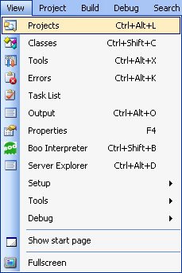
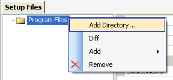
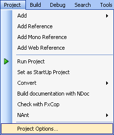

This tutorial will walk you through creating an installer from scratch using the integrated WiX support included with SharpDevelop 2.1.
The installer that will be created is a real-world example and was used by Christoph Wille as the starting point for his Code Comment Checking Policy for Visual Studio Team System installer.
Please note that you will need a recent version of SharpDevelop 2.1 to follow this walkthrough. In beta 3 any changes made to the WiX project's options are incorrectly encoded on saving. This prevents the project from being compiled.
First, what does our installer need to do?
| Item | Description |
|---|---|
| cccppol.dll (.NET assembly) | To be installed in Program Files. |
| ICSharpCode.CCCPLib.dll (.NET assembly) | To be installed in the GAC |
| ICSharpCode.NRefactory.dll (.NET assembly) | To be installed in the GAC |
| ICSharpCode.SharpDevelop.Dom.dll (.NET assembly) | To be installed in the GAC |
|
Registry key:
HKLM\SOFTWARE\Microsoft\VisualStudio\8.0\TeamFoundation\SourceControl\Checkin
Policies
Registry value name: cccppol |
The registry value cccppol should contain the full path to the cccppol.dll assembly. |
| License Information | The installer should show the license information in one of its dialogs. |
| Installation Directory | The installer should allow the user to select where the cccppol file is to be installed. The default should be "C:\Program Files\Cccp Policy" |
It has four .NET assemblies to install. Three of which are to be registered in the GAC. It needs to create one registry key that points to the cccppol.dll file. The installer UI needs to show license information and allow you to choose the directory where the cccppol.dll file will be installed. Now let's create our installer.
To create a new WiX setup project, from the File menu, select New and then select Solution....
This opens the New Project dialog box.
Select the Setup category and then select Empty Setup Project from the list of available templates. We are going to use the empty project and try to keep the setup as simple as possible using as much of the functionality that WiX provides for us. Give the setup project a name and choose a location for it to be saved. Finally click the Create button.
The empty setup project contains very little, just one Setup.wxs file, which is where we will start. At the moment the project will not compile, so let us fix that. First give your product a name and a manufacturer.
<Product Id="8F3A52FE-BB54-4BC9-953C-7173D16AA96D" Name="Code Comment Checking Policy" Language="1033" Version="1.0.0.0" Manufacturer="ic#code">
Then give your package a description.
<Package Id="A970C90A-3EFD-4121-B92D-2D0454643B38" Description="Installs Code Comment Checking Policy for VSTS" Comments="Comments" InstallerVersion="200" Compressed="yes" />
Before we add the four files to the installer we need to add a few extra bits to Setup.wxs. First we add a media element to the product.
<!-- Source media for the installation. Specifies a single cab file to be embedded in the installer's .msi. --> <Media Id="1" Cabinet="contents.cab" EmbedCab="yes" CompressionLevel="high"/>
Here we are specifying that the files should be embedded in the installer (.msi) and we want the compression to be high. Now we create a directory element, as highlighted below, so you should end up with a Setup.wxs file that looks like:
<Wix xmlns="http://schemas.microsoft.com/wix/2003/01/wi">
<Product Id="8F3A52FE-BB54-4BC9-953C-7173D16AA96D"
Name="Code Comment Checking Policy"
Language="1033"
Version="1.0.0.0"
Manufacturer="ic#code">
<Package Id="A970C90A-3EFD-4121-B92D-2D0454643B38"
Description="Installs Code Comment Checking Policy for VSTS"
Comments="Comments" InstallerVersion="200"
Compressed="yes" />
<!--
Source media for the installation.
Specifies a single cab file to be embedded in the installer's .msi.
-->
<Media Id="1" Cabinet="contents.cab" EmbedCab="yes" CompressionLevel="high" />
<!-- Installation directory and files are defined in Files.wxs -->
<Directory Id="TARGETDIR" Name="SourceDir"/>
</Product>
</Wix>
The SourceDir directory does not get created on installation. It is just the name used to identify where in the WiX XML to look for the files and directories that will be installed. Which is what we will now look at.
We are going to create a new WiX file (Files.wxs) that will contain information about the files to be installed. Open the Project Explorer, if it is not already open, by selecting Projects from the View menu.

In the Projects Explorer select the name of your project, right click, select Add and then New Item....
This opens the New File dialog box.
Select the Setup category, and then select Empty Setup Document from the list of available templates. Type in the name Files.wxs and then click the Create button to add the new file to your project.
Now in order to make SharpDevelop aware that we want to put the file information in Files.wxs we need to make a reference to the SourceDir directory element that we added to Setup.wxs. If we do not do this then when we add files using the Setup Files Editor the file information will be added to the Setup.wxs file inside the SourceDir directory element. So modify Files.wxs so it looks like:
<?xml version="1.0"?> <Wix xmlns="http://schemas.microsoft.com/wix/2003/01/wi"> <Fragment> <DirectoryRef Id="TARGETDIR"> </DirectoryRef> </Fragment> </Wix>
Here we have referenced the SourceDir directory element by referring to its Id TARGETDIR. Now save the Files.wxs file and close it. We are now ready to add some files.
Open up the Setup Files editor, from the View menu select Setup and then select Files.
We first need to create the Program Files directory. The directories, when we create them, will be displayed in the left hand window. Right click in the left hand window, select Add and then select Directory.
On the right hand side of the Setup Files window, fill in the details as shown below.

Here we have specified the Program Files folder by using the special ProgramFilesFolder id. In this case the Name and Long Name of the directory do not matter and are not used when installing. If you are creating a custom folder, which is what we will do next, you will need to specify these values.
Now we need a Cccp Policy directory. This could be added as we did previously, but we can add a new directory and the files in one go to save us a lot of time. Here I made a bin folder and copied into it the four files that will be a part of our installer.
From the Setup Files window, we can add the bin folder to the installer by right clicking Program Files and selecting Add Directory....

Browse to the bin folder, select it and click the OK button.

If you expand the bin folder just added you will see that the files have been added each inside their own component.
.
Select the bin folder and change the name by modifying the properties on the right hand side as shown below.
The files now need to be configured. The Cccppol is a .NET assembly which does not need to be installed in the GAC. The modified properties for this file are shown below.
Here I have updated the Assembly, AssemblyApplication, AssemblyManifest and KeyPath properties. These need to be set for a .NET assembly.
The Assembly property indicates that the file is a .NET assembly.
The AssemblyManifest property is set to the id of the assembly manifest file. In general the manifest file is the assembly itself.
Setting the KeyPath to true means that the installer will use the existence of this file to indicate that the component is installed. It is a Windows Installer guideline that this is set to true for a .NET assembly.
The AssemblyApplication property is set to the id of the file so it is not installed in the GAC. If the assembly needs to be registered in the GAC then the AssemblyApplication property should be left blank. If it is blank then the files will not be installed into Program Files and will only exist in the GAC. If you need these files to be installed into Program Files aswell you will need to create a separate component and fill in the AssemblyApplication property.
The other files should be configured in a similar way, the only difference that the AssemblyApplication should not be set since they are to be registered in the GAC. As an example, the properties for one file are shown below.
Now that the files have been added we need to add the registry value. The registry value will point to the installed cccppol.dll so we will put it inside the same component. Select the CccppolDll component, right click, select Add and then select Registry.
Enter the registry properties as shown below.
This will create a registry value cccppol under the HKLM\SOFTWARE\Microsoft\VisualStudio\8.0\TeamFoundation\SourceControl\Checkin Policies key. The value is set to the full path to the cccppol.dll. This is done using a value of the form [#FileId] which will expand out when installed to the full path of the file. A value of the form [!FileId] would expand to the short name of the file (i.e. it includes ~ characters).
We have now finished with the Setup Files editor so you can close it. If you want you can open up the Files.wxs file and see the WiX XML that has been generated.
Now that we have added the files to the installer we need to associate these files with features so they will be installed. Currently SharpDevelop does not have a GUI editor for features so you will have to add them by hand. Open Setup.wxs and inside the Product element add the following:
<!-- Features to install -->
<Feature Id="Complete" Level="1">
<Feature Id="CodeCommentCheckingPolicyBinaries" Level="1">
<ComponentRef Id="CccppolDll"/>
<ComponentRef Id="ICSharpCode.CCCPLibDll"/>
<ComponentRef Id="ICSharpCode.NRefactoryDll"/>
<ComponentRef Id="ICSharpCode.SharpDevelop.DomDll"/>
</Feature>
</Feature>
Here we have created two features, one called CodeCommentCheckingPolicyBinaries that references all the components we are going to install, and one parent feature called Complete. We could have just used the one feature to install everything. We have put the files into a separate feature so in the future we could an add extra feature containing documentation that could be optionally installed.
Now we need to show some dialogs when the installer is run. WiX ships with a dialog library which saves you the time and effort of creating new dialogs. The dialog library supports several different dialog sequences. We want to show a license and allow the user to choose the installation folder and for this we can use the WixUI_InstallDir sequence of dialogs. In Setup.wxs insert the following xml inside the Product element.
<!-- Use Wix UI library --> <Property Id="WIXUI_INSTALLDIR">INSTALLDIR</Property> <UIRef Id="WixUI_InstallDir"/>
The WIXUI_INSTALLDIR property is used to tell the WiX dialog library the id of the directory that the user is allowed to configure. In our case it is INSTALLDIR.
Now we need to add the WiX dialog library to our project. In the Project Browser, select WiX Libraries, right click and select Wix Library.
Now browse to the file wixui.wixlib, which is shipped with SharpDevelop in the subfolder bin\Tools\Wix folder. Select the file and click the Open button. The WiX dialog library should then be added to your project.
Now we need to add the WiX localisation file (.wxl) to the project. A localisation file contains all the strings that are displayed in the dialogs. We are going to use the English localisation file since this is complete. For information on the status of other localisations refer to the WiX localisation project page. From the Project menu select Project Options.

In the Application tab, locate the Localisation string
file field, click the Browse button
 to open the Open
File dialog, locate the WixUI_en-us.wxl file inside the
bin\Tools\Wix folder, select it and click the Open
button. The localisation file should then be added to the project
options.
to open the Open
File dialog, locate the WixUI_en-us.wxl file inside the
bin\Tools\Wix folder, select it and click the Open
button. The localisation file should then be added to the project
options.
Save the changes you have made to the project options. We have not quite finished, but you can test the dialogs if you want. First build the project. From the Build menu, select Build Cccp.Setup.
Once the installer has built successfully, run it by selecting Run from the Debug menu.

You should then see the first setup dialog.

If you tried out all the setup dialogs you will see that an end user license is displayed. In order to get a custom license shown we need to create a rich text document called License.rtf and put it into the same folder as the WiX project file (Cccp.Setup.wixproj). Then on rebuilding the project the custom license will be taken from this file, embedded into the installer and displayed when installing.
Now we want the installer to inform the user that the installer can only be run under the following conditions:
To do this we add three Condition elements to Setup.wxs inside the Product element.
<!-- Check for .NET 2.0 --> <Condition Message="This setup requires the .NET Framework 2.0 or higher."> Installed OR MsiNetAssemblySupport >= "2.0.50727" </Condition> <!-- Check for the operating system is at least Windows 2000 (VersionNT = 500). --> <Condition Message="The operating system you are using is not supported (95/98/ME/NT3.x/NT4.x)."> Installed OR VersionNT >= 500 </Condition> <!-- Check for admin rights --> <Condition Message="Administrator rights are required to install the Code Comment Checking Policy."> Privileged </Condition>
If a condition fails then a message will be displayed. Some of the conditions also use have an Installed OR part which means the installer will never prevent the user from repairing or uninstalling the package if it is already installed.
Now all that is left to do is run the installer and check that it actually installs everything correctly.
After you have tested out your installer, making sure it creates the correct registry key, and copies the files to the correct location, you should validate the created msi file.
To validate the installer you can use one of the validation tools provided by Microsoft. One such tool is Orca which is available as part of the Windows 2003 R2 Platform SDK. Orca was originally created by Rob Mensching and as well as allowing you to validate your installer it also allows you to view and edit the various tables inside your .msi file.
To validate the installer with Orca.exe, use the File menu to open the .msi file, then from the Tools menu select Validate.
From the dialog that opens we can choose various validation suites.
Validating the installer we just created against the Full MSI Validation Suite we see three warnings.
| Error ID | Description |
|---|---|
| ICE74 | The UpgradeCode property is not authored in the Property table. It is strongly recommended that authors of installation packages specify an UpgradeCode for their application. |
| ICE82 | This action WelcomeDlg has duplicate sequence number 1298 in the table InstallUISequence |
| ICE82 | This action MaintenanceWelcomeDlg has duplicate sequence number 1298 in the table InstallUISequence |
The two ICE82 warnings are from the WiX UI dialog library so we shall ignore them. The other error is about upgrades. If you are never going to support upgrades then you can ignore it, but if you are or might do in the future we can fix the warning by adding an UpgradeCode attribute to the Product element.
<Wix xmlns="http://schemas.microsoft.com/wix/2003/01/wi">
<Product Id="8F3A52FE-BB54-4BC9-953C-7173D16AA96D"
Name="Code Comment Checking Policy"
Language="1033"
Version="1.0.0.0"
Manufacturer="ic#code"
UpgradeCode="">
This value for this attribute is a GUID which can be quickly generated either by using the keyboard shortcut Ctrl+Shift+G or from the Edit menu, selecting Insert and then Insert New GUID.
That's the end of this walkthrough. If you want more information about WiX than is given here, one of the best WiX tutorials available is that created by Gábor DEÁK JAHN which can be found at http://www.tramontana.co.hu/wix/